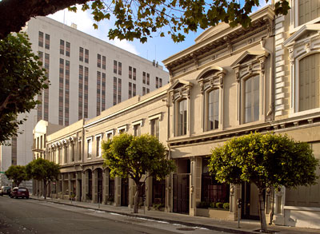
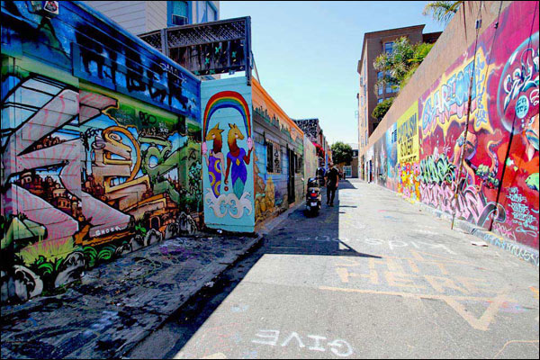

Hi everybody!

My name's Danielle
I'm originally from Los Angeles, I attended UC Santa Cruz, and I've been living in San Francisco since 2005.
I love living in this city, and I'd be honored and delighted to share some of my favorite spots with you!
Jackson Square
In my previous incarnation as a gallery manager for some amazing art and antiques dealers I spent most of my days around Jackson Square, one of the most historically fascinating parts of the city. It's located right at the base of the big pointy Trans America building.
The Mission
The Mission is one of the most captivating neighborhoods in the city. It's both gritty and gentrified, a great place for to grab a tamale from a street vendor or drop your entire paycheck on fine dining. Economically and ethnically diverse, it's like a microcosm of San Francisco itself.
Clarion Alley
Where to Eat Fancily!
- Kokkari - Haute Rustic Greek. Get the grilled octopus!
- Aziza - Moroccan flair with amazing cocktails.
- La Mar - Ceviche. Such cevivhe. my God, the ceviche.
- La Folie - Decadent, chic, and creative French inspired cuisine.
Where to Eat Less Fancily!
- Taqueria Cancun - Chances are, if you are reading this, I am eating a burrito the size of my head.
- Goood Fricken Chicken - So good they needed an extra o.
- Zeitgeist - The tastiest burgers, the surliest bartenders. So good.
- Anda Piroshki - Tiny pop-up in a Bernal Heights collective. Try the 'Bunnie's Delight'